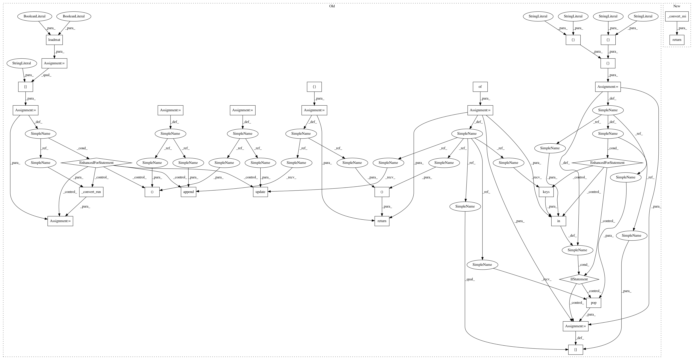

1ae9b7d534d1d4c540ce9258820d1b8fbc97c709,moabb/datasets/bnci.py,,_load_data_004_2014,#Any#Any#Any#Any#Any#Any#,166
Before Change
url = "{u}004-2014/B{s:02d}{r}.mat".format(u=base_url, s=subject, r=r)
data_paths.extend(data_path(url, path, force_update, update_path))
raws = []
event_id = {}
from scipy.io import loadmat
for filename in data_paths:
data = loadmat(filename, struct_as_record=False, squeeze_me=True)
print(type(data["data"]))
for run in data["data"]:
raw, evd = _convert_run(run, ch_names, ch_types, verbose)
raws.append(raw)
event_id.update(evd)
// change labels to match rest
for old, new in [["left hand", "left_hand"], ["right hand", "right_hand"]]:
if old in event_id.keys():
event_id[new] = event_id.pop(old)
return raws, event_id
@verbose
def _load_data_008_2014(subject, path=None, force_update=False,
After Change
data_paths.extend(data_path(url, path, force_update, update_path))
return _convert_mi(data_paths, ch_names, ch_types)
@verbose
def _load_data_008_2014(subject, path=None, force_update=False,
In pattern: SUPERPATTERN
Frequency: 3
Non-data size: 31
Instances
Project Name: NeuroTechX/moabb
Commit Name: 1ae9b7d534d1d4c540ce9258820d1b8fbc97c709
Time: 2018-01-24
Author: vjayaram@danube.is.localnet
File Name: moabb/datasets/bnci.py
Class Name:
Method Name: _load_data_004_2014
Project Name: NeuroTechX/moabb
Commit Name: 1ae9b7d534d1d4c540ce9258820d1b8fbc97c709
Time: 2018-01-24
Author: vjayaram@danube.is.localnet
File Name: moabb/datasets/bnci.py
Class Name:
Method Name: _load_data_004_2015
Project Name: NeuroTechX/moabb
Commit Name: 1ae9b7d534d1d4c540ce9258820d1b8fbc97c709
Time: 2018-01-24
Author: vjayaram@danube.is.localnet
File Name: moabb/datasets/bnci.py
Class Name:
Method Name: _load_data_002_2014
Project Name: NeuroTechX/moabb
Commit Name: 1ae9b7d534d1d4c540ce9258820d1b8fbc97c709
Time: 2018-01-24
Author: vjayaram@danube.is.localnet
File Name: moabb/datasets/bnci.py
Class Name:
Method Name: _load_data_004_2014